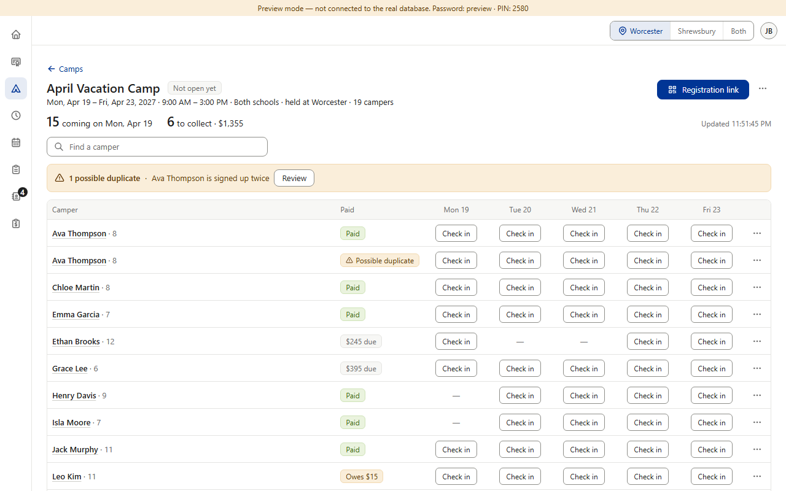
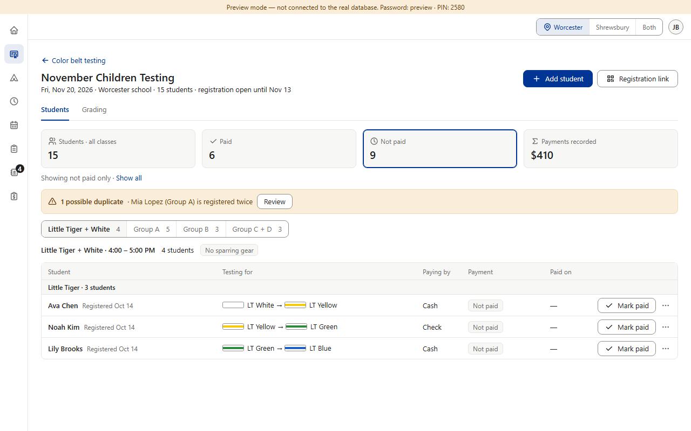
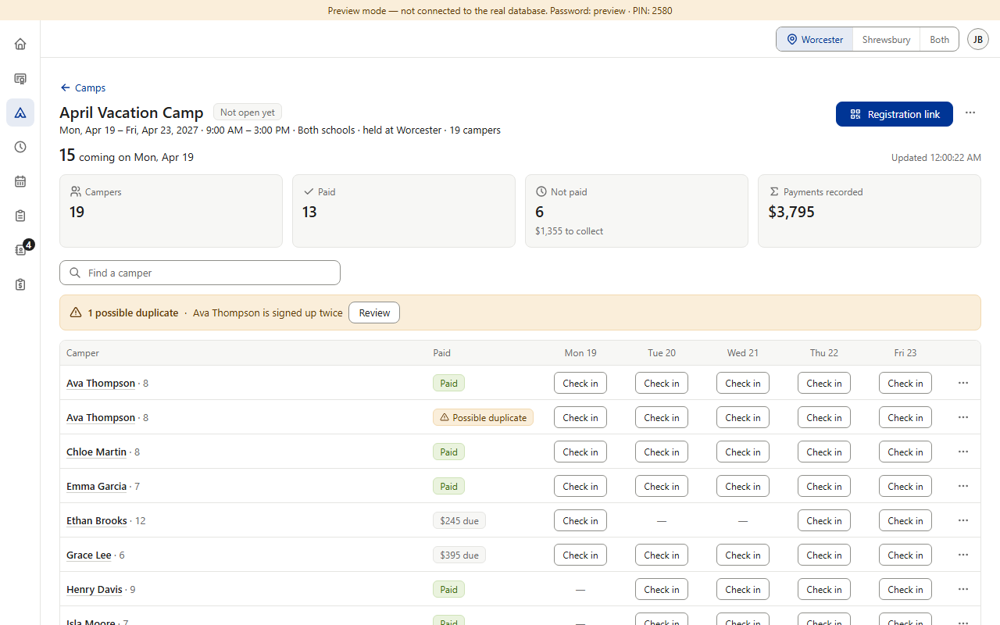
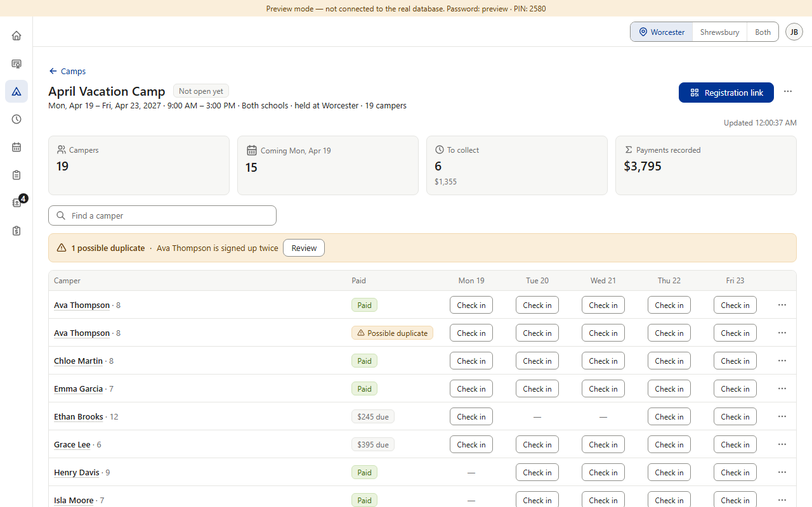

Item 11 decided: cards everywhere. Every roster gets the row of count cards, and tapping a card filters the list. Camps is the one roster without cards, so this question is which four it gets. Assumed — tell me if not: Black Belt keeps its own four plan cards (Paid in full · Paying on schedule · Late · Not paid) in the same look; Finance's Daily report keeps its cards as they are (a report, not a roster). (Preview screenshots at PC size · fake data; the April camp's numbers are its real preview records)



